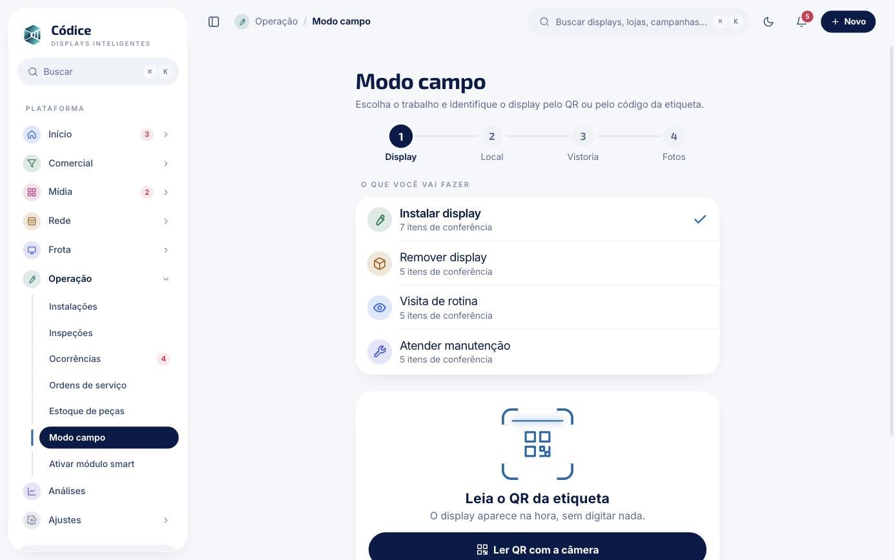
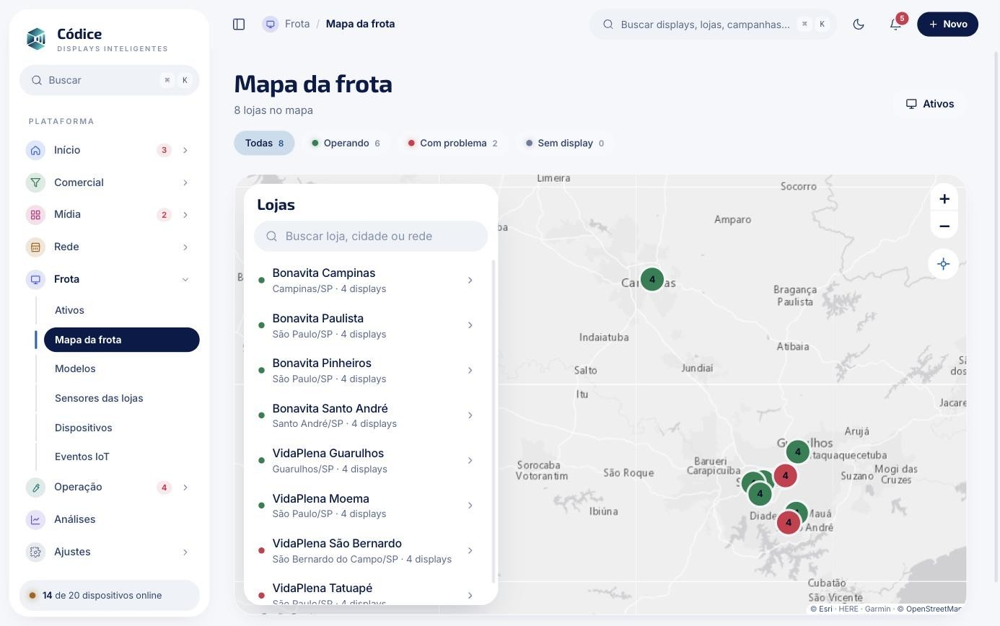

Fonte: 75lab.com.br, números da 75 LAB; carteira de clientes de 2025 e 2026.
Ferrero×
O objetivo de 2027
Cada loja no ponto. E a prova disso.
≥95%de cobertura comprovada
≥90%de material conforme
3níveis de investimento
8 semde piloto antes de escalar
TeoriaMarcas crescem quando são fáceis de achar e de lembrar.
Metas propostas pela 75 LAB, a validar com a Ferrero. Teoria: Byron Sharp, How Brands Grow, Oxford University Press, 2010 (disponibilidade física e mental).
Ferrero×
Por que agora
Ferrero Rocher ganha novas ocasiões.
35%do chocolate no Brasil é tablete
4 saborescom o novo Noz-Pecã & Avelã
−19%de volume no lar
+17%no preço por quilo
O premium precisa se justificar dentro da loja.
Fontes: Ferrero, comunicados de 29/08/2024 e 16/11/2026 (Nielsen, maio de 2025: participação do formato, não da marca); Worldpanel by Numerator, 1º trimestre de 2025 contra 2024; Kantar, Páscoa 2025.
Ferrero×
Foto ou KV do momentoEquipe de design · 460 × 560 px
Insight do consumidor
“Quero um momento só meu. Mas precisa valer a pena.”
DesejoUm prazer premium no dia
BarreiraBolso apertado e pressa
A loja resolveVisível, claro e com motivo
TeoriaO shopper contrata um momento, não só um chocolate.
Insight-hipótese da 75 LAB a partir de Worldpanel, Kantar e do posicionamento da linha pela Ferrero, a validar em campo. Teoria: jobs to be done, Christensen, Hall, Dillon e Duncan, Competing Against Luck, 2016.
Ferrero×
Momentos de compra
Quatro momentos, quatro jeitos de expor.
PresenteUm carinho sem data marcadaExposição premium
Para mimUm prazer só meu, no diaPeça no fluxo
DescobertaProvar o novo saborLançamento em destaque
CompartilharLevar para dividirLinha em bloco
Hipóteses de trabalho da 75 LAB (jobs to be done candidatos), a confirmar com observação em 12 a 18 lojas e 20 a 30 entrevistas rápidas, conforme as regras de cada varejista e a LGPD.
Ferrero×
O problema
Entre a campanha e a compra, a loja decide.
Campanha
Chegadanão instalada
Exposiçãofora do lugar
Estoqueruptura
Compravai pro concorrente
Valor percebidoExecução desigualInvestimento sem rastroCanais diferentes
Leitura da 75 LAB sobre a execução de lançamentos no varejo. Hipóteses operacionais, sem dados da Ferrero, a validar com Trade, Vendas e Operações. O fluxo é ilustrativo, não uma medição.
Ferrero×
A ideia
Experiência em camadas.
Uma marca. Uma base física. Três níveis de investimento.
Rota B+ da 75 LAB: estética e engenharia da rota de diferenciação, cobertura da rota de eficiência e infraestrutura pronta para a de inovação. Tecnologia só entra onde resolve um problema claro.
Ferrero×
O enxoval
Uma base, quatro peças-chave.
Render 3D600 × 760 px · PNG sem fundoDisplay de chão
PremiumCluster B
Render 3D600 × 760 px · PNG sem fundoPonta de gôndola
PremiumCluster A
Render 3D600 × 760 px · PNG sem fundoDisplay de balcão
EssencialTodos
Render 3D600 × 760 px · PNG sem fundoIlha promocional
PremiumCluster A
ComplementosRéguaStopperWobblerTesteiraBandejaKit QR
Espaços reservados para os renders da equipe de design (assets/slots). Conceito sujeito a aprovação técnica e de marca, com SKUs e embalagens oficiais da Ferrero.
Ferrero×
Modularidade
Monta, troca e reaproveita.
Animação 3D da montagemEquipe de design · MP4 16:9 · loop
04Kit de identificação
03Comunicação
02Suportes de produto
01Base e fixadores
Troca só a arteMenos freteManutenção simplesReuso no próximo lançamento
Materiais candidatos: papelão microondulado no temporário; PS e PET em peças leves; MDF, metal ou ACM nas estruturas. Especificação final com cálculo de carga, estabilidade e teste de campo.
Ferrero×
Clusterização
Investimento na medida de cada loja.
Potencial da loja
Vendas30
Sortimento20
Espaço20
Operação15
Custo15
ABC
A · EstratégicoB · DesenvolvimentoC · Capilaridade
Hiper e superPonta ou ilhaDisplay de chãoRégua e stopper
Pesos em % propostos pela 75 LAB, revisados com os dados de distribuição da Ferrero; corte por quartis ou tercis. Implantação sujeita à autorização da rede, à distribuição real dos SKUs e à política comercial da Ferrero.
Ferrero×
Rastreio de ativos
Cada display com identidade e histórico.
ID único
Instalação
Foto
Registro
Painel
Códice · Modo campo

QR lidoDisplay instalado e registrado
QR operacionalpara quem executaQR do shopperpúblico, sem cadastroSensoressó onde validar
Tela real da plataforma Códice, da 75 LAB, em ambiente de demonstração. Métricas contínuas dependem de hardware, energia, rede e validação de campo.
Ferrero×
WebAR · sem aplicativo
Ferrero Rocher
Ver por dentro
Realidade aumentada
O bombom ganha vida na mão do shopper.
Sem aplicativoSem cadastroCamadas em 3DMedição agregada
Animação ilustrativa da 75 LAB. Camada opcional por cluster, testada contra uma página mobile simples; depende de protótipo aprovado, materiais oficiais da Ferrero e compatibilidade dos aparelhos. Interação não é tratada como venda.
Ferrero×
Gestão de campo
Do display ao dashboard.
Plataforma 75 LAB

Pesquisa de preçoLoja 0142 · Hiper · Cluster A
SKUPreçoPromoGôndola
Ferrero RocherR$ ••,••NãoDisponível
Tablete Noz-PecãR$ ••,••NãoDisponível
Tablete Ao LeiteR$ ••,••SimDisponível
Tablete BrancoR$ ••,••NãoRuptura
ConcorrenteR$ ••,••SimDisponível
Execução Trade 2027Piloto · semana 6 de 8
Cobertura
Conformidade
Disponibilidade
A
B
C
Roteiro e auditoria: telas reais da plataforma Códice, da 75 LAB, em ambiente de demonstração. Pesquisa de preço e dashboard: simulações sem dados. Funciona como módulo próprio ou integrado às ferramentas da Ferrero, com LGPD.
Indicadores propostos pela 75 LAB, com fórmula, fonte, frequência e responsável definidos no piloto. Os anéis são ilustrativos. Sem dados de venda e margem da Ferrero, não há ROI numérico: o cálculo usa as premissas aprovadas pela Ferrero.
Ferrero×
Piloto
Testar pequeno, escalar com prova.
AtivadaControle
A
B
C
24lojas
3clusters
8semanas
Linha de base · 4 semAtivação · 4 sem
0Descoberta1Briefing2Protótipo3Piloto4Avaliação
Desenho proposto pela 75 LAB, a negociar com a Ferrero: 12 lojas ativadas e 12 de controle, pareadas por rede, região, histórico, preço e disponibilidade. Objetivo primário: provar execução e qualidade do dado; sell-out é leitura exploratória.
Ferrero×
Próximo passo
O PDV não termina quando o display sai da fábrica.